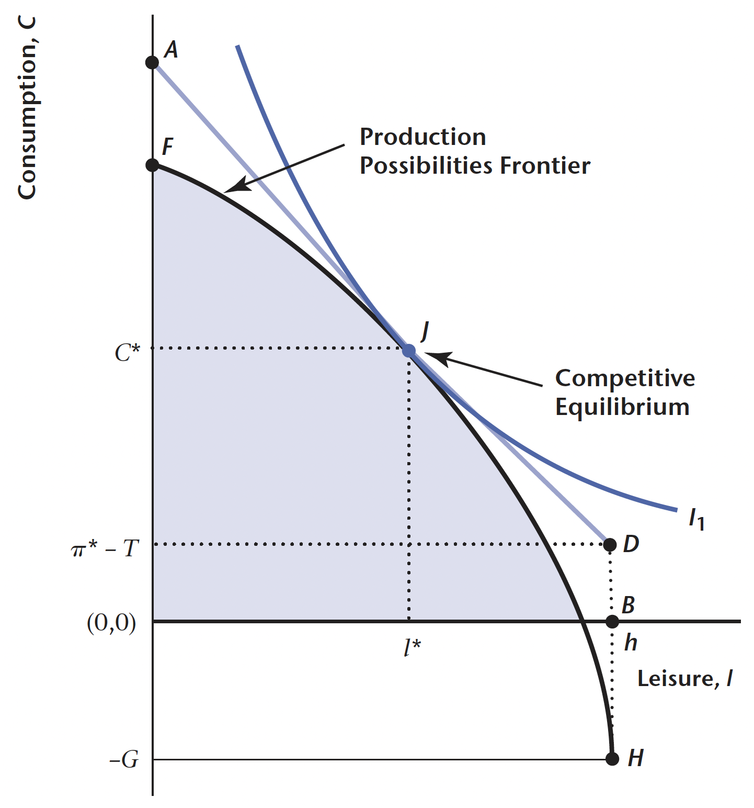
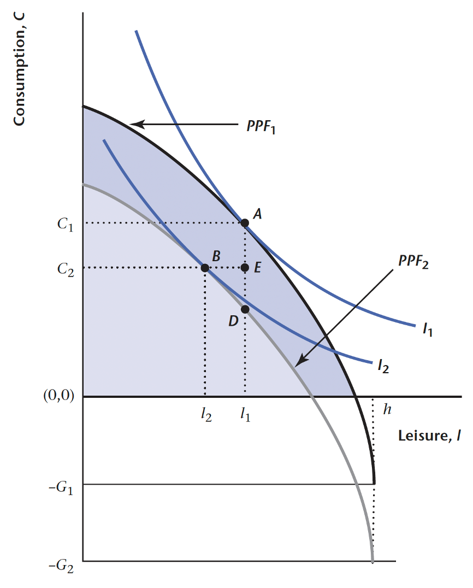
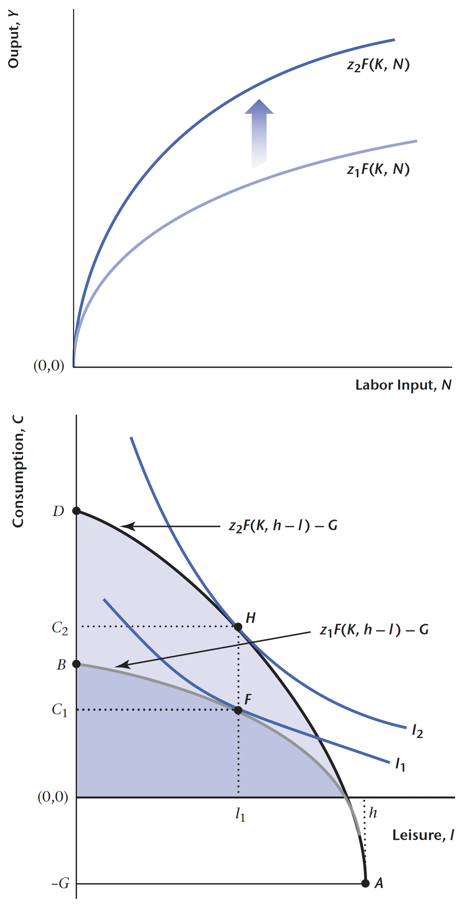
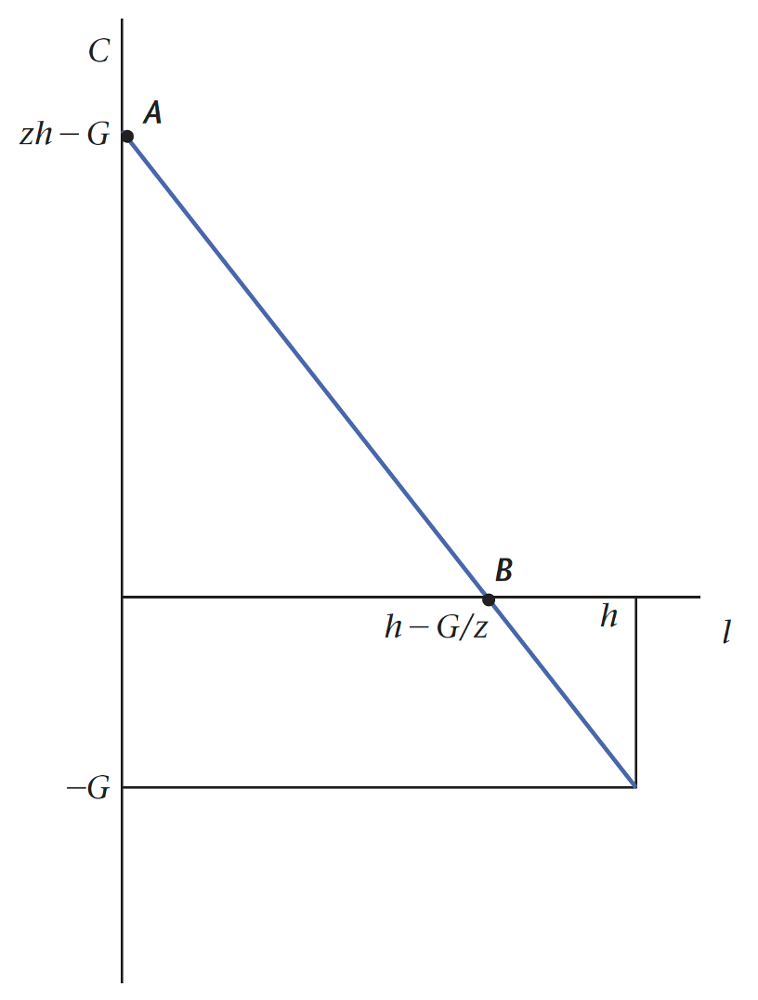
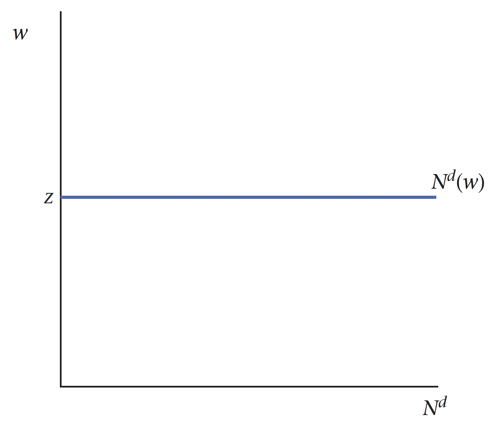
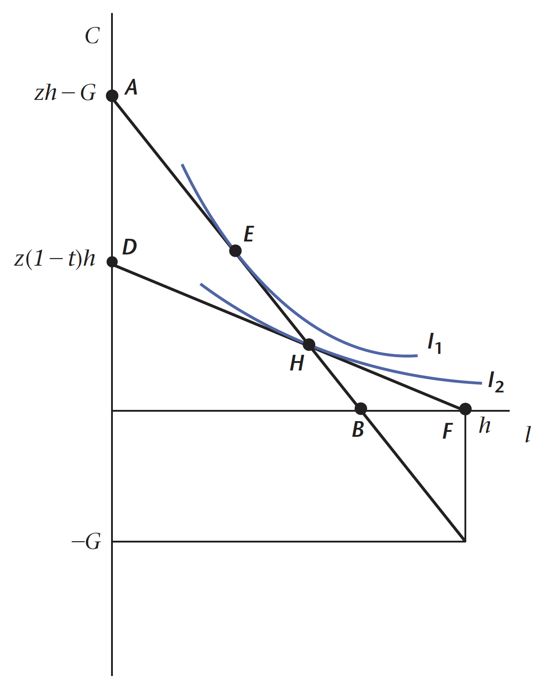

競爭均衡
藉由消費者與生產者在市場上的互動，分析互動如何決定經濟體系中的資源配置。
我們考慮一個封閉經濟體系(closed economy)模型，其中由眾多家戶與廠商組成，分別描述現實生活中的消費者與生產者，並給予以下假設：
- 家戶(household)：數量眾多的同質家⼾單位，且
- 存在相同的偏好，⾯對相同的限制，因此只需考慮⼀個代表性家庭，分析此家庭如何選擇消費與勞動
- ⾯對給定的實質⼯資，決定⼯作時長，以及消費多少單位商品
- 廠商(firm)：數量眾多的⽣產者，
- 有相同的⽣產技術，與相同的資本數量，因此只需考慮⼀個代表性廠商，分析此廠商的⾏為
- 在給定的⼯資下，決定⽣產多少單位的商品與雇⽤多少單位的勞動
家戶消費與勞動的選擇，連同廠商⽣產與勞動雇⽤的決策，共同決定此⼀經濟社會的 資源配置。
封閉經濟體系
討論競爭均衡之前，我們必須先了解市場上的一些特性與規則。以下我們將針對市場結清條件與 Walras’ law 進行說明。
市場清算條件(Market Clearing Conditions)
首先我們要釐清一個市場中的價格是如何決定。一般來說，在沒有特別假設或其他因素影響下，市場價格係係由市場中的供需雙方共同決定。換言之，市場中的消費者與生產者彼此給出願付價格(willingness to pay)與願收價格(willingness to sell)，互相交流最終給出一個共識，這個共識即是市場價格。
在我們的模型中，存在兩個重要的市場：
- 勞動市場均衡：企業雇用員工形成對勞動的需求，家庭提供勞動服務形成勞動供給，供需的互動決定均衡的工資率與勞動量，即 \[ n^{d} = n^{s} \]
其中 \(n\) 代表勞動，上標 \(d\) 與 \(s\) 分別代表需求(demand) 與供給(supply)。
- 商品市場均衡：企業生產形成對商品的供給，家庭消費形成商品需求，供需的互動決定均衡的商品價格與數量，即 \[ X^{d} = X^{s} \]
其中 \(X\) 代表市場中某一項特定產品。
因此在競爭均衡中，均衡價格使市場達到清算。
Walras’ Law
當代總體分析的基本假設是，經濟社會中所有市場都達成均衡的狀態，稱為一般均衡或全面均衡(general equilibrium)。
進行一般均衡時，我們最常用的一個概念稱之為 Walras’ Law：假設市場總數為 \(n\) 個，當其中 \(n-1\) 個市場達成均衡時，第 \(n\) 個市場必定同時達成均衡。因此，若勞動市場達成均衡，商品市場將自動達成均衡，反之亦然(vice versa)。
注意到 Walras’ Law 並不意味著市場必然結清，但若商品市場結清，則勞動市場必然結清，反之亦然。因此，兩個市場的結清條件只要其中一式成立即已足夠。
靜態模型的競爭均衡
靜態模型的競爭均衡(competitive equilibrium, CE)是指我們考慮的經濟社會由眾多同質的消費者及廠商所組成，在完全競爭的商品市場及勞動市場互動，在外生給定的技術水準(\(A\))及資本存量(\(K\))下，要達成經濟世界的全面均衡（或稱競爭均衡），需要同時滿足以下三組條件：
消費者效用極大：消費者在給定價格下，能夠最大化其效用，即從有限的預算中選擇最佳的消費組合。
廠商利潤極大：廠商在給定價格下，能夠最大化其利潤，即最大化收入減去成本。
市場結清：在均衡狀態下，商品市場與勞動市場都達到供求平衡，不會出現供過於求或求過於供的情況。
注意到在 CE 下，消費者和廠商均為價格接受者而非價格制定者，市場能夠自發達到均衡狀態，所有資源得以最有效率地配置。
消費者效用極大
在給定實質工資與非勞動所得 \(\{w, \pi\}\)之下，均衡消費及均衡勞動必須滿足消費者最適選擇的一階條件與與算限制，代表消費者對於消費與休閒兩者的主觀替代率(MRS)要與市場上的客觀替代率（也就是實質工資）相等，即 \[ \frac{u_{l}(c, l)}{u_{c}(c, l)} = \text{MRS}_{l, c} = w \]
此外仍要滿足消費者的預算限制式： \[ c = w(h - l) + \pi \]
其中 \(h\) 為代表性消費者所能支配的時間。上述兩個條件決定消費者的消費需求 \(c\) 與勞動供給 \(n^{s}\)。注意到對消費者⽽⾔，非勞動所得是外⽣變數，但對總體經濟⽽⾔其為內⽣變數，必須在體系內決定。
廠商利潤極大
在給定 \(\{w, A, K\}\) 下，均衡勞動也必須滿⾜廠商最適選擇的⼀階條件，即 \[ AF_{n}(k, n) - w \overset{*}{=} 0 \Longleftrightarrow \text{MPN}(k, n) = w \]
上式決定廠商的勞動需求 \(n^{d}\) 及商品供給 \({y}\)。根據定義，均衡利潤是 \[ \pi = AF(k, n) - wn \] 這也是內⽣變數。
市場結清
在競爭均衡中，我們要求商品市場與勞動市場必須結清，即要求市場⼯資率 \(w\) 必須保證市場供需平衡。
商品市場：\(c = y\)
勞動市場：\(n^{d} = n^{s}\)
以上兩式又稱市場結清條件(market-clearing conditions)。
我們利用 Walras’ law 回顧一下競爭均衡的過程。首先消費者面臨以下預算限制： \[ c = wn^{s} + \pi \] 代表消費者的消費取決於勞動所得 \(wn^{s}\) 與非勞動所得 \(\pi\)，其中非勞動所得的存在係因為此模型假設消費者持有廠商的股份，又廠商持有的股份係從利潤得來的，而利潤的計算方式為 \[ \pi = AF(k, n) - wn \]
因此將其帶入消費者預算限制，可以得到 \[ c = wn^{s} + AF(k, n) - wn^{d} = AF(k, n) + w(n^{s} - n^{d}) \]
移項整理後得到 \[ c - AF(k, n) = w(n^{s} - n^{d}) \]
若實質工資可以使勞動供給等於勞動需求時，即 \(n^{s} = n^{d}\)，等式右邊便會等於 \(0\)，再移項後就得到一個不是很令人意外的結果： \[ c = AF(k, n) \] 隱含消費者的消費量恰好等於廠商所生產產品的數量，
資源配置效率：福利經濟學(Welfare Economics)
上述提及的競爭均衡是一個去中心化(decentralized)或分權式經濟，乃因經濟體系中的行為者均是在各自不同的「限制」下追求「慾望」。
現在我們考慮一個經濟體系，其中存在一個社會規劃者(social planner)，可以想像為仁民愛物的君主或是勤儉有效率的政府，該規劃者將制定經濟中的所有決策。這位社會規劃者關心消費者的福祉，並且要決定如何分配消費者的休閒和勞動。為了分析方便，假設社會規劃者僅考慮代表性個人的福利，其面對的問題是： \[ \begin{aligned} &\max \; u(c, l)\\ &\text{ s.t. } \; c = AF(k, n)\\ &\qquad\; l + n = h \end{aligned} \]
社會規劃者的目標是要最大化消費者的效用\(u(c, l)\)，同時滿足生產與時間禀賦的限制條件，確保整個經濟在效率和公平性上都能達到最佳的狀態。
最適化問題求解
我們已經知道社會規劃者面臨的最適化問題為 \[ \begin{aligned} &\max \; u(c, l)\\ &\text{ s.t. } \; c = AF(k, n)\\ &\qquad\; l + n = h \end{aligned} \]
將效用函數中的變數替換成預算限制式的條件，重新改寫為： \[ \max_{n} u\left(AF(k, n), h - n\right) \]
根據一階條件，得到 \[ u_{c}\left(AF(k, n), h - n\right)AF_{n}(k, n) + u_{l}\left(AF(k, n), h - n\right)(-1) \overset{*}{=} 0 \] 移項整理後得 \[ u_{c}(c, l)AF_{n}(k, n) = u_{l}(c, l) \]
已知 \(AF_{n}(k, n) = \text{MPN}\)，我們將 \(u_{c}(c, l)\) 移到等式右邊後並移項得 \[ \frac{u_{l}(c, l)}{u_{c}(c, l)} = \text{MRS}_{l, c} = \text{MPN} \]
此即競爭均衡下的最適條件。
Pareto 最適(Pareto Optimal)
在經濟學中，我們有兩個重要的概念：Pareto 最適和市場競爭均衡（Competitive Equilibrium）。
首先，Pareto 最適的概念是，一個資源分配被稱為 Pareto 最適，代表如果沒有其他分配能夠使任何一個個體獲得更高的效用效用，而不會使至少一個個體效用降低。
市場競爭均衡則是指在自由市場經濟中，存在著強大的力量（即看不見的手），使得消費者和生產者在商品市場與勞動市場的交易和互動，通過價格機制的引導，決定了整體經濟社會的資源配置，從而使整個社會獲得最大的福利，促使經濟達到社會效率。
然而，值得注意的是，市場競爭均衡並不一定是 Pareto 最適的。在現實中，可能存在市場失靈或外部性等因素，使得市場競爭均衡並不能達到最佳的效率。這時候，社會可能需要進行干預和政策調整，以達到 Pareto 最適的分配。
第一福利定理(first welfare theorem)：在「特定條件」下，透過市場價格調整機能，競爭均衡必然是 Pareto 最適狀態。特定條件包含無外部性、無資訊不對稱（交易摩擦）、無扭曲性租稅、廠商不具有獨佔 力。
第二福利定理(second welfare theorem)：給定適當的財富重分配，則在「特定條件」下，任一 Pareto 最適狀態（不只一個）也必然對應於某一個競爭均衡。
考慮政府的封閉經濟體系
現在我們將上述假設的經濟體系加入第三個角色：政府。此經濟體系的表現完全由政府、消費者及廠商三個成員的互動所決定。他們的⾏為共同決定了此⼀經濟社會的資源配置。如果不考慮國際市場的因素，⼀國國民經濟就取決於這三者的經濟活動。
在商品市場中，廠商是供給者，政府與消費者是需求者
在勞動市場中，廠商是需求者，消費者是供給者
政府(Government)
經濟學將所有經濟主體分為公共部⾨(public sector)和私⼈部⾨(private Sector)兩⼤類。
公共部⾨是指政府及其相關機構，私⼈部⾨是指企業和家庭。無論政府還是企業和家庭，都以各⾃的⾏為⽅式參與國民經濟運⾏，影響著國民經濟的發展⽅向和進程。
在現代社會運作中，政府擔任著極其重要的角色。政府從廠商和消費者身上徵收各種稅款，並提供公共財，例如國防、治安、交通和疫苗等。此外，政府還提供各種移轉性支付(transfer payment)，如失業補助、急難救助和社會福利補助等。
政府參與經濟活動的範圍廣泛，涵蓋生產、流通、資源配置、消費導向、稅收、水利、市政建設以及社會經濟生活的各個方面。在這些領域，政府扮演著監管、管理、分配和公共服務提供者的角色，幾乎無處不在。
儘管政府與企業和家庭共同參與經濟活動，但其行為方式和目的卻有所不同。企業和家庭作為私人部門，以追求收益最大化為前提和目標。而政府則不同，其經濟活動一方面不能忽視收益與成本，但另一方面必須以全社會公正和公平為前提和目標。
注意到我們上述考慮消費者的所得僅從勞動與非勞動所得而來。但在加入政府後的經濟體系中，消費者的所得除了⼯資與股利外，還包含政府給付的各種移轉性⽀付，如失業補助、急難救助與五倍劵。為了簡化分析，我們假設政府的移轉性⽀付及稅負是以定額稅(lump sum tax)性質，換⾔之，稅賦⾼低獲補貼多少皆與消費者⼯作時數與所得⾼低無關
另外一項假設是，因為⽬前我們考慮的是單期模型， 跟消費者⼀樣，政府不能借貸或發⾏公債， 其預算必須隨時平衡，想⽀出多少就必須課多少稅。
靜態模型的競爭均衡
根據外⽣給定的技術⽔準(\(A\))、資本存量(\(K\))、政府⽀出(\(G\))，此⼀經濟體系的全⾯均衡要求以下四組條件同時滿⾜：
消費者效⽤極⼤
廠商利潤極⼤
政府預算平衡
勞動市場與商品市場同時達到均衡
消費者效用極大
在給定實質工資、非勞動所得、定額稅 \(\{w, \pi, T\}\)之下，均衡消費及均衡勞動必須滿足消費者最適選擇的一階條件與與算限制，代表消費者對於消費與休閒兩者的主觀替代率(MRS)要與市場上的客觀替代率（也就是實質工資）相等，即 \[ \frac{u_{l}(c, l)}{u_{c}(c, l)} = \text{MRS}_{l, c} = w \]
此外仍要滿足消費者的預算限制式： \[ c = w(h - l) + \pi - T \]
從而求解出此經濟體系中的消費需求 \(c\) 與勞動供給 \(n^{s}\)。
廠商利潤極大
在給定 \(\{w, A, K\}\) 下，均衡勞動也必須滿⾜廠商最適選擇的⼀階條件，即 \[ AF_{n}(k, n) - w \overset{*}{=} 0 \Longleftrightarrow \text{MPN}(k, n) = w \]
上式決定廠商的勞動需求 \(n^{d}\) 及商品供給 \({y}\)。根據定義，均衡利潤是 \[ \pi = AF(k, n) - wn \]
政府預算平衡
競爭均衡下，政府預算限制式必須滿⾜預算平衡，因此經濟體系中政府存在的唯⼀⽬的就是⽀出與課稅，因此： \[ G = T \] 其中 \(T\) 代表每⼈平均定額稅淨額，\(G\) 則是每⼈平均政府商品購買量。
市場結清
同樣地，在此經濟體系的競爭均衡求解過程中，我們仍要求商品市場與勞動市場必須結清，即要求市場⼯資率 \(w\) 必須保證市場供需平衡。
商品市場：\(c + G = y = AF(k, n)\)
勞動市場：\(n^{d} = n^{s} = n\)
兩式即是市場結清條件。下圖顯示了在消費者效用與廠商利潤極大化，以及政府預算平衡之下所對應的競爭均衡點，滿足 \[ \text{MRS} = \text{MPN} = \text{MRT} \]
其中邊際技術轉換率 (marginal rate of transformation, MRT)係指在經濟社會中，在給定的技術⽔準下，兩種商品的轉換率，又 \[ \text{MRT} = -\frac{\Delta c}{\Delta l} \]
即下圖生產可能曲線上任一點的切線斜率。

我們仍可以利用 Walras’ law 推導競爭均衡的過程。消費者面臨以下預算限制： \[ c = wn^{s} + \pi - T \] 代表消費者的消費取決於勞動所得 \(wn^{s}\)、非勞動所得 \(\pi\) 以及定額稅 \(T\)。又利潤的計算方式為 \[ \pi = AF(k, n) - wn \]
因此將其帶入消費者預算限制，可以得到 \[ c = wn^{s} + AF(k, n) - wn^{d} - T = AF(k, n) + w(n^{s} - n^{d}) - T \]
移項整理後得到 \[ c + T - AF(k, n) = w(n^{s} - n^{d}) \] 又因為此經濟體系要求政府預算平衡，則根據給定條件 \(G = T\)，我們又可將上式改寫為
\[ c + G - AF(k, n) = w(n^{s} - n^{d}) \]
若實質工資可以使勞動供給等於勞動需求時，即 \(n^{s} = n^{d}\)，等式右邊便會等於 \(0\)，再移項後就得到一個不是很令人意外的結果： \[ c = AF(k, n) \]
競爭均衡與外生衝擊
外生變數是經濟模型中的外在確定因素，而內生變數則是由這些外生變數所決定。在經濟分析（尤其是總體經濟）中，我們關注的是當外生變數改變時，內生變數會如何變化。
現實世界中，有各式各樣的外⽣衝擊會⼲擾經濟活動。
需求⾯衝擊(demand shock)：有些⼲擾主要影響商品需求，例如政府⽀出及國外需求的變動
供給⾯衝擊(supply shock) 有些⼲擾主要影響商品⽣產，例如颱風、地震、能源價格的變動
有些衝擊則會同時影響經濟的需求⾯與供給⾯，例如 2008 至 2009 年的⾦融風暴。因此我們的目標就是分析不同外來衝擊對總體經濟的影響。
政府支出增加
根據資料顯示，在過去的數十年間，政府參與經濟活動的程度不斷擴大，導致政府支出占國內生產總值的比率大幅提高。
在古典模型中，市場機制被認為可以充分發揮作用，因此政府採取放任政策，只負責必要的行政事務，財政支出相對有限。然而，在傳統凱因斯模型中，經濟不景氣的原因被認為是「需求不足」，主張政府透過「增加購買支出」來刺激內需，擴大有效需求，即使需要舉債來支應政府支出也在所不惜。
近年來由於諸多負面經濟事件出現在世界各國，大政府思維逐漸興起，認為政府對科技政策、產業升級、農林漁牧等各行業的穩定輔導措施都應視為當然任務。此外，中央與地方政府積極推動各項重大公共工程，如高速公路、高速鐵路、捷運等，也推行健保制度、農、勞保，以及提供老人年金等社會保障，以解決人民的醫療保險問題。上述因素共同導致政府支出占國民所得比例呈現大幅上漲的趨勢。
圖形解釋

政府支出的增加將使生產可能曲線向下移動，移動的幅度等於政府支出增加的數額。這將導致消費和休閒時間均出現負面的所得效果，因此消費和休閒都會下降，而就業將增加，同時產出也會增加。
在增加政府支出後，由於政府投入更多資金進入經濟體系，這將刺激更多的經濟活動，提高了生產和就業。然而，由於人們的收入增加了，他們在消費和休閒方面的需求也會增加，導致了消費和休閒時間的下降。這些負面的所得效果對於消費者和勞動者而言，使得他們在政府支出增加後，無法像完全忽視所得效果時那樣享受更多的消費和休閒。
政府⽀出增加的乘數效果
政府⽀出上升，造成消費者均衡消費的下降，我們稱為政府⽀出的排擠效果(crowding-out effect)。根據商品市場結清條件 ，產出的變動量必滿⾜ \[ \Delta c + \Delta G = \Delta y \] 因為政府⽀出增加會排擠民間的消費，但其降幅⼩於 \(G\) 增加的幅度，因此 \[ 0 < \Delta y < \Delta G \]
換⾔之，政府⽀出增加雖能刺激景氣使產出上升，但其增加幅度卻⼩於 \(G\) 的增幅，因此政府⽀出增加的乘數效果小於 \(1\)，此⼀結論與傳統凱因斯模型截然不同（傳統凱因斯強調政府乘數是十分有效的，因此不太會出現小於 \(1\) 的情況）。1
根據上述分析，政府⽀出變動雖使就業與產出同向變動，但消費與實質⼯資卻與產出變動⽅向相反，這表⽰政府⽀出雖會影響總體經濟，但其變動並非造成景氣變動的主要原因。
技術水準提高
當技術水準提高後，生產可能曲線向外移動，且變得更陡峭。我們先給予結論再進行分析：在 \(z\) 上升後，消費量、產出與實質工資均會上升，但是休閒時間則不一定。為了分析技術水準增加對勞動與休閒的影響效果，我們可以分解為替代效果與所得效果。

技術水準增加的替代效果與所得效果
當生產可能曲線上升，平行移動至與原先無異曲線相切的 \(D\) 點位置時，表示效用水準保持不變。此時，\(A\) 點不再是最適選擇點，從 \(A\) 點移動至 \(D\) 點顯示消費與勞動增加，而休閒減少，這是因為勞動邊際生產力上升所產生的替代效果。
生產可能曲線向上平移回原來位置，因為消費與休閒都是正常財，最適選擇將落於 \(D\) 點右上方，即新生產可能曲線與無異曲線的切點 B。此時，消費與休閒增加，勞動減少，這是所得效果。
比較 \(A\) 點與 \(B\) 點，技術水準的上升必然使消費與生產增加，但勞動則因所得效果與替代效果方向相反而無法確定。圖中兩者力量剛好互相抵銷，故最後勞動水準保持不變。
技術水準變動對實質工資的影響
雖然勞動因所得效果與替代效果方向相反而無法確定，但技術水準的上升必然會導致實質工資增加。\(B\)、\(D\) 位於平行的生產可能線上，但 \(B\) 點對應的勞動量較低，因此根據邊際產量遞減法則， \[ \text{MPN}_{B} > \text{MPN}_{D} \] \(A\)、\(D\) 位於相同的無異曲線上，且 \(A\) 點對應的休閒較高，根據邊際替換率遞減法則 \[ \text{MRS}_{D} > \text{MPS}_{A} = \text{MPN}_{A} \] 因此我們可以作一個小結論：無論均衡勞動是上升、不變或下降，以上的推論均成立。
假設技術水準下降是造成景氣衰退的主因，政府可以採⽤擴⼤商品購買 量，來提振內需。但是根據前⾯的分析，因為政府⽀出上升，雖會使產出與勞動增加，但民間消費下降，這種政策雖能緩解經濟不景氣，使產出下降不致太多，但是消費者卻需更努⼒⼯作，且消費更少商品，似乎讓⽣活苦上加苦，這種以需求⼿段解決供給問題的政策顯然會使消費者效⽤⽔準下降。
扭曲性租稅(Distorting Tax)對總體經濟的影響
福利經濟學第一與第二定理成立的前提之一，即是經濟體系中不存在扭曲性財政政策，當該前提不成立時，社會規劃者選定的資源配置與競爭均衡的結果並不會相同，因此無法透過求解社會規劃者的問題找到經濟體系中有效率的資源配置，故必須直接求解存在扭曲性租稅下的市場競爭均衡。
以下分析我們考慮比例性所得稅(proportional income taxation)對於總體經濟的衝擊與影響。
模型假設與分析
假設廠商在生產時考慮一個線性生產函數(linear production function)，且僅存在一個生產要素——勞動： \[ Y = zN^{d} \]
此生產函數符合固定規模報酬的特性。在競爭均衡中我們要求商品市場與勞動市場要滿足以下條件，才能夠使市場結清：
商品市場：\(C + G = Y\)
勞動市場：\(N^{d} = h - l\)
因此將勞動市場均衡條件代入商品市場均衡條件，得到 \[ C + G = z(h - l) \]
因此可以繪製出以下的線性生產可能曲線：

由於我們此時僅考慮勞動此一生產要素，故將生產可能曲線代入利潤函數中，可以得到 \[ \pi = Y - wN^{d} = (z - w)^{d} \]
由於技術水準為定值 \(z\)，代表性企業對勞動的需求曲線在 \(w = z\) 時是完全彈性的，故為一條水平線。這意味著當工資等於 \(z\) 時，代表性廠商願意雇用任何數量的勞動力。

假設在此經濟體系中，政府對消費者的勞動所得課徵 \(t\) 比例的所得稅，且不存在定額稅，因此消費者所面臨的預算限制式為 \[ C = w(1-t)(h-l) + \pi \]
已知線性生產函數使得 \(w = z\)，代入利潤函數得到 \(\pi = 0\)，故預算限制式可改寫為 \[ C = z(1-t)(h-l) \]

從圖中我們可以看到，競爭均衡的結果位在 \(H\) 點，但 Pareto 最適點在 \(E\) 點，兩者並不相同。
Laffer 曲線
Laffer 曲線表示政府制定的稅率與稅收之間的關係。可以看到 Laffer 曲線具有先上升後下降的趨勢，且存在最高點，該點對應的即是能夠使得稅收極大的稅率。
已知預算限制式為 \[ C = z(1-t)(h-l) \] 而稅收則是邊際稅率乘上所得，即 \[ \text{Rev} = tz(h - l) \]
Laffer 曲線的概念是指當稅率很低時，由於鼓勵經濟活動和消費，稅收會隨之增加；然而，如果稅率過高，可能會抑制經濟活動，導致稅收減少。因此，Laffer 曲線表明稅收在某一點達到最大值，此後隨著稅率的增加，稅收反而會下降。

Footnotes
在實證資料中，民間消費、勞動⼯時、及實質⼯資率均與實質 GDP 呈現正向相關，這些變數屬於順循環變數。↩︎
Reuse
Citation
@online{sung2023,
author = {Sung, Anthony},
title = {競爭均衡},
date = {2023-07-25},
url = {https://yueswater-blog.netlify.app/posts/2023-07-25-macro-competitive-equilibrium-one-period/},
langid = {en}
}